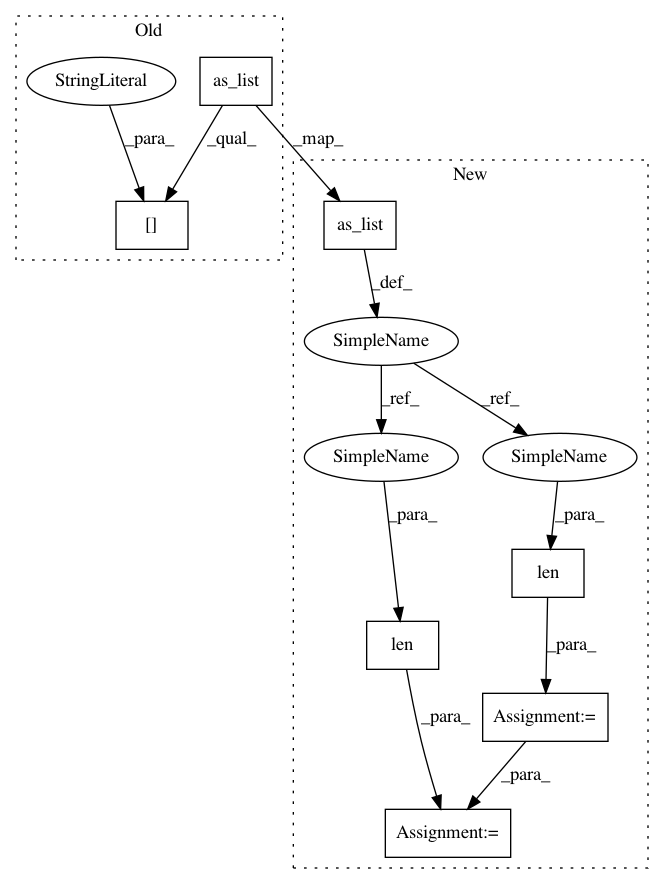

7c8af7a941f49539f2d5eb1b17d61952fc70e2bc,niftynet/layer/resampler.py,ResamplerLayer,_resample_inv_dst_weighting,#ResamplerLayer#Any#Any#,171
Before Change
in_spatial_rank = infer_spatial_rank(inputs)
out_spatial_rank = infer_spatial_rank(sample_coords)
out_spatial_size = sample_coords.get_shape().as_list()[1:-1]
self.power = 2
self.N = 2 ** in_spatial_rank
After Change
in_spatial_rank = infer_spatial_rank(inputs)
out_spatial_rank = infer_spatial_rank(sample_coords)
out_size = sample_coords.get_shape().as_list()
out_spatial_size = out_size[1:-1]
self.power = 2
self.N = 2 ** in_spatial_rank
binary_neighbour_ids = [
[int(c) for c in format(i, "0%ib" % in_spatial_rank)]
for i in range(self.N)]
weight_id = [[[c, i] for i, c in enumerate(bc)]
for bc in binary_neighbour_ids]
floor_coord = self.boundary_func(
tf.floor(sample_coords), in_spatial_size)
ceil_coord = self.boundary_func(
tf.floor(sample_coords) + 1.0, in_spatial_size)
all_coords = tf.stack([floor_coord, ceil_coord], axis=0)
coords_shape = all_coords.get_shape().as_list()
floor_diff = tf.squared_difference(
sample_coords, tf.to_float(all_coords[0]))
ceil_diff = tf.squared_difference(
sample_coords, tf.to_float(all_coords[1]))
diff = tf.stack([floor_diff, ceil_diff], axis=0)
// transpose to shape inds: [0, -1, others]
diff = tf.transpose(
diff, [0, len(out_size)] + range(1, len(out_size)))
point_weights = tf.gather_nd(diff, weight_id)
point_weights = tf.reduce_sum(point_weights, axis=1)
point_weights = tf.pow(point_weights, self.power / 2.0)
point_weights = tf.reciprocal(point_weights)
// workaround for zero weights
point_weights = tf.minimum(point_weights, 1e12)
// transpose to shape inds: [0, -1, others]
all_coords = tf.transpose(
all_coords, [0, len(out_size)] + range(1, len(out_size)))
knots_id = tf.gather_nd(all_coords, weight_id)
knots_id = tf.transpose(
knots_id, [0] + range(2, out_spatial_rank + 3) + [1])
knots_shape = knots_id.get_shape().as_list()
b_id = tf.reshape(
tf.range(batch_size),
[1] + [batch_size] + [1] * (len(knots_shape) - 2))
b_id = tf.tile(
b_id, [knots_shape[0]] + [1] + out_spatial_size + [1])
b_id = tf.concat([b_id, knots_id], axis=-1)
point_weights = tf.expand_dims(point_weights, axis=-1)
samples = tf.gather_nd(inputs, b_id)
samples = tf.reduce_sum(samples * point_weights, axis=0)
samples = samples / tf.reduce_sum(point_weights, axis=0)
return samples
In pattern: SUPERPATTERN
Frequency: 3
Non-data size: 7
Instances
Project Name: NifTK/NiftyNet
Commit Name: 7c8af7a941f49539f2d5eb1b17d61952fc70e2bc
Time: 2017-10-24
Author: wenqi.li@ucl.ac.uk
File Name: niftynet/layer/resampler.py
Class Name: ResamplerLayer
Method Name: _resample_inv_dst_weighting
Project Name: wenwei202/iss-rnns
Commit Name: 535d15402492fc10579a3211dc83c74f2741cc31
Time: 2016-10-23
Author: seominjoon@gmail.com
File Name: my/tensorflow/general.py
Class Name:
Method Name: flatten
Project Name: NifTK/NiftyNet
Commit Name: 7c8af7a941f49539f2d5eb1b17d61952fc70e2bc
Time: 2017-10-24
Author: wenqi.li@ucl.ac.uk
File Name: niftynet/layer/resampler.py
Class Name: ResamplerLayer
Method Name: _resample_inv_dst_weighting
Project Name: wenwei202/iss-rnns
Commit Name: 535d15402492fc10579a3211dc83c74f2741cc31
Time: 2016-10-23
Author: seominjoon@gmail.com
File Name: my/tensorflow/general.py
Class Name:
Method Name: reconstruct